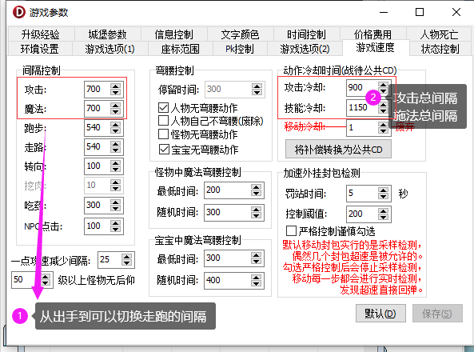

1、间隔控制：这里的值是控制出手到切换任意动作的间隔时间。(即等于老版本的攻击补偿、施法补偿)
例如:攻击切换走跑、攻击切施法等等的时长
2、动作冷却时间：这里的值是控制整个动作的总时间的，攻击总间隔、施法总间隔，这个值必须大于前面的间隔控制。
老版本引擎换到新版本引擎只需要点击一下下面的 将补偿转换为公共CD 按钮即可
3、严格控制说明：严格控制是为应对市面上的微加速而设置的一个封挂功能，该功能开启后将严格按照控制阈值来检测玩家速度
任何一次低于控制值的动作，都会被罚站并回弹，例如：攻击超速后这一刀就是个假刀，施法超速后就是个假的举手
移动超速后会被反弹回来。
控制阈值不建议设置太低，一切以自己服务器的网络速度来设置，太低了可能会影响正常玩家的操作
4、脚本控制单个玩家的封速和野蛮宽松度。
自定义封速命令
SetPunishParam 5 200
1 1 1
参数1 罚站CD（罚站的时间）
参数2 封速阈值（不开严格控制建议值200，开了严格建议值300）
参数3 严格控制等级（0-5 0代表关闭，建议值1-3）
参数4 走跑接野蛮时等待（禁止抬腿野蛮，即按野蛮后必须等玩家这一步跑完后才会执行野蛮）
参数5 攻击接野蛮时等待（禁止抬手野蛮，即按野蛮后必须等玩家这一刀砍完后才会执行野蛮）
注:默认不禁止抬腿野蛮、抬手野蛮的情况下，按了野蛮即会取消当前动作，立即执行野蛮，这样就可以操作出抬脚就出的隔位野蛮和出刀在半空中接野蛮的操作。